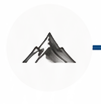
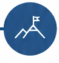
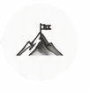
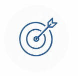

My Flow
See your growth. Know your next step.
Current Flow Level
Shodan
Beginning your reflective practice
Start small. Build your habit.

ShodanStarting out
RenshaPracticingwith consistency

DōshaFlowingwith mastery
Next Upgrade Guidance

To grow, focus on Understanding Problems:
Flow Index
0/100
Build your practice
Complete reflections to see your progress.
Updated from your Daily, Weekly and Monthly KATA